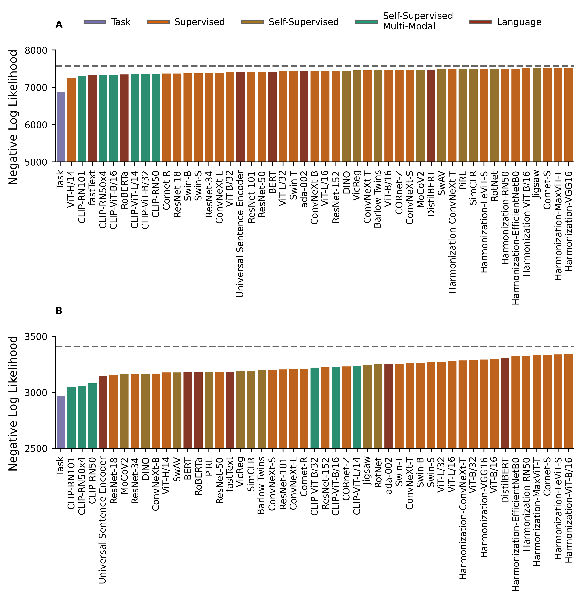

import stringfrom os.path import joinimport globimport jsonimport numpy as npimport pandas as pdimport matplotlib as mplimport matplotlib.pyplot as pltimport matplotlib.patheffects as pefrom matplotlib.lines import Line2Dimport seaborn as snsimport pandas as pdimport numpy as npfrom scipy.stats import kendalltau, ttest_1sampimport torchfrom thingsvision import get_extractor, get_extractor_from_modelfrom tqdm import tqdmfrom harmonization.models import ( load_ViT_B16, load_ResNet50, load_VGG16, load_EfficientNetB0, load_tiny_ConvNeXT, load_tiny_MaxViT, load_LeViT_small,)from NaturalCogSci.helpers import get_project_root
Plotting Parameters
Code
mpl.rcParams['axes.spines.right'] =Falsempl.rcParams['axes.spines.top'] =FalseFIGWIDTH =6.99866CATEGORYTRIALS =120REWARDTRIALS =60project_root = get_project_root()withopen(join(project_root, "data", "model_plot_params.json")) as f: plot_params = json.load(f)plot_params = {k.replace("/","_"):v for k,v in plot_params.items()}cmap = ["#7570B3","#D95F02","#A6761D","#1B9E77","#972D15","#E6AB02","#666666"]sns.set_palette(cmap)sns.color_palette(cmap)SMALL_SIZE =8MEDIUM_SIZE =10BIGGER_SIZE =12plt.rc('font', size=SMALL_SIZE) # controls default text sizesplt.rc('axes', titlesize=SMALL_SIZE) # fontsize of the axes titleplt.rc('axes', labelsize=MEDIUM_SIZE) # fontsize of the x and y labelsplt.rc('xtick', labelsize=SMALL_SIZE) # fontsize of the tick labelsplt.rc('ytick', labelsize=SMALL_SIZE) # fontsize of the tick labelsplt.rc('legend', fontsize=SMALL_SIZE) # legend fontsizeplt.rc('figure', titlesize=BIGGER_SIZE) # fontsize of the figure titlelatex_context = {"pgf.texsystem": "pdflatex",'font.family': 'serif','text.usetex': True,'pgf.rcfonts': False,}# retina figuresmpl.rcParams['figure.dpi'] =300mpl.rcParams['savefig.dpi'] =300
/tmp/ipykernel_9745/3663908693.py:33: FutureWarning: Calling float on a single element Series is deprecated and will raise a TypeError in the future. Use float(ser.iloc[0]) instead
[float(glmm_df[glmm_df['term']==regressor]['estimate'] + glmm_df[glmm_df['term']==regressor]['std.error']),
/tmp/ipykernel_9745/3663908693.py:34: FutureWarning: Calling float on a single element Series is deprecated and will raise a TypeError in the future. Use float(ser.iloc[0]) instead
float(glmm_df[glmm_df['term']==regressor]['estimate'] - glmm_df[glmm_df['term']==regressor]['std.error'])],
/tmp/ipykernel_9745/385213310.py:38: FutureWarning: Calling float on a single element Series is deprecated and will raise a TypeError in the future. Use float(ser.iloc[0]) instead
[float(glmm_df[glmm_df['term']==regressor]['estimate'] + glmm_df[glmm_df['term']==regressor]['std.error']),
/tmp/ipykernel_9745/385213310.py:39: FutureWarning: Calling float on a single element Series is deprecated and will raise a TypeError in the future. Use float(ser.iloc[0]) instead
float(glmm_df[glmm_df['term']==regressor]['estimate'] - glmm_df[glmm_df['term']==regressor]['std.error'])],
SINGLECOLWIDTH =3.4252fig, ax = plt.subplots(1,2,figsize=(2*SINGLECOLWIDTH, SINGLECOLWIDTH),sharey=True)behavioural_df = pd.read_csv(join(project_root, "data", "human_behavioural", "category_learning", "above_chance.csv"))# loop through each trial in the behavioural df, and do a t-test against .5# record p-valuesp_values = []for trial in behavioural_df.trial.unique(): p_values.append(ttest_1samp(behavioural_df[behavioural_df.trial == trial].correct, .5)[1])category_p_df = pd.DataFrame({"trial":np.array(behavioural_df.trial.unique())+1,"p":p_values})category_p_df["sig"] = np.where(category_p_df.p <.05, 1, 0)sns.scatterplot(data=category_p_df,x="trial",y="p",hue='sig',ax=ax[0],color=cmap[-2])# log scale for y axisax[0].set_yscale('log')ax[0].set_xlabel("Trial")ax[0].set_ylabel("p-value")# dashed grey horizontal line at .05ax[0].axhline(.05,ls="--",color=cmap[-1],lw=1)# remove legendax[0].legend_.remove()# do the same for reward learningbehavioural_df = pd.read_csv(join(project_root, "data", "human_behavioural", "reward_learning", "above_chance.csv"))p_values = []for trial in behavioural_df.trial.unique(): p_values.append(ttest_1samp(behavioural_df[behavioural_df.trial == trial].correct, .5)[1])reward_p_df = pd.DataFrame({"trial":np.array(behavioural_df.trial.unique())+1,"p":p_values})reward_p_df["sig"] = np.where(reward_p_df.p <.05, 1, 0)sns.scatterplot(data=reward_p_df,x="trial",y="p",hue='sig',ax=ax[1],color=cmap[-2])# log scale for y axis# match it to the category learning plotax[1].set_yscale('log')ax[1].set_xlabel("Trial")ax[1].set_ylabel("p-value")# dashed grey horizontal line at .05ax[1].axhline(.05,ls="--",color=cmap[-1],lw=1)# remove legendax[1].legend_.remove()ax[0].text(-.1, 1.0, string.ascii_uppercase[0], transform=ax[0].transAxes, weight='bold')ax[1].text(-.1, 1.0, string.ascii_uppercase[1], transform=ax[1].transAxes, weight='bold')plt.show()with mpl.rc_context(latex_context): fig.savefig(join(project_root, "figures","p_values.pdf"), bbox_inches='tight')
Sparse Models
Code
fig = plt.figure(layout="constrained",figsize=(FIGWIDTH, FIGWIDTH))spec = fig.add_gridspec(2, )ax0 = fig.add_subplot(spec[0])ax0.text(0, 1.2, string.ascii_uppercase[0], transform=ax0.transAxes, weight='bold')dfs = glob.glob(join(project_root, "data", "learner_behavioural", "category_learning", "*_l1_original.csv"))dfs = [pd.read_csv(x) for x in dfs]model_df = pd.concat(dfs)model_df["nll"] =- np.where(model_df.choice ==1, np.log(model_df.prob), np.log(1-model_df.prob))chance_level =- model_df.participant.nunique() * CATEGORYTRIALS * np.log(0.5)model_df = model_df.groupby("features").agg({"nll":"sum"}).reset_index()model_df = model_df.sort_values(by="nll",ascending=True).reset_index(drop=True)model_df["color"] = model_df["features"].apply(lambda x: plot_params[x]["colour"])model_df["features"] = model_df["features"].apply(lambda x: plot_params[x]["name"])sns.barplot( data=model_df,x="features",y="nll",hue="color",dodge=False,ax=ax0, hue_order=["task","supervised","self-supervised","self-supervised multimodal","text"] )ax0.legend_.remove()ax0.axhline(chance_level,ls="--",color=cmap[-1])# show x-axis ticks in the barsax0.xaxis.set_tick_params(rotation=90)ax0.set_ylabel("Negative Log Likelihood")ax0.set_xlabel("")ax0.set_ylim(5000,8000)ax0.set_yticks([5000,6000,7000,8000])ax0.yaxis.set_label_coords(-0.07,.4)ax1 = fig.add_subplot(spec[1])ax1.text(0, 1.2, string.ascii_uppercase[1], transform=ax1.transAxes, weight='bold')dfs = glob.glob(join(project_root, "data", "learner_behavioural", "reward_learning", "*_l1_original.csv"))dfs = [pd.read_csv(x) for x in dfs]model_df = pd.concat(dfs)model_df["prob"] = np.where(model_df.prob ==1,.99999,model_df.prob)model_df["nll"] =- np.where(model_df.choice ==1, np.log(model_df.prob), np.log(1-model_df.prob))chance_level =- model_df.participant.nunique() * REWARDTRIALS * np.log(0.5)model_df = model_df.groupby("features").agg({"nll":"sum"}).reset_index()model_df = model_df.sort_values(by="nll",ascending=True).reset_index(drop=True)model_df["color"] = model_df["features"].apply(lambda x: plot_params[x]["colour"])model_df["features"] = model_df["features"].apply(lambda x: plot_params[x]["name"])reward_model_df = model_dfsns.barplot( data=model_df,x="features",y="nll",hue="color",dodge=False,ax=ax1, hue_order=["task","supervised","self-supervised","self-supervised multimodal","text"] )ax1.legend_.remove()ax1.axhline(chance_level,ls="--",color=cmap[-1])# show x-axis ticks in the barsax1.xaxis.set_tick_params(rotation=90)ax1.set_ylabel("Negative Log Likelihood")ax1.set_xlabel("")ax1.set_ylim(2500,3500)ax1.set_yticks([2500,3000,3500])ax1.yaxis.set_label_coords(-0.07,.4)custom_legend_lines = [Line2D([0], [0], color=x, lw=2, path_effects=[pe.Stroke(linewidth=4, foreground=cmap[-1]), pe.Normal()]) for x in cmap[:-1]]hue_order = ['Task','Supervised','Self-Supervised','Self-Supervised\nMulti-Modal','Language']fig.legend(custom_legend_lines, hue_order, loc='center',bbox_to_anchor=(0.54, 1),ncol=5,frameon=False)plt.show()with mpl.rc_context(latex_context): fig.savefig(join(project_root, "figures","sparse_models.pdf"), bbox_inches='tight')
PCA Models
Code
fig = plt.figure(layout="constrained",figsize=(FIGWIDTH, FIGWIDTH))spec = fig.add_gridspec(2, )ax0 = fig.add_subplot(spec[0])ax0.text(0, 1.2, string.ascii_uppercase[0], transform=ax0.transAxes, weight='bold')dfs = glob.glob(join(project_root, "data", "learner_behavioural", "category_learning", "*_l2_pca.csv"))dfs = [pd.read_csv(x) for x in dfs]model_df = pd.concat(dfs)model_df["nll"] =- np.where(model_df.choice ==1, np.log(model_df.prob), np.log(1-model_df.prob))chance_level =- model_df.participant.nunique() * CATEGORYTRIALS * np.log(0.5)model_df = model_df.groupby("features").agg({"nll":"sum"}).reset_index()model_df = model_df.sort_values(by="nll",ascending=True).reset_index(drop=True)model_df["color"] = model_df["features"].apply(lambda x: plot_params[x]["colour"])model_df["features"] = model_df["features"].apply(lambda x: plot_params[x]["name"])sns.barplot( data=model_df,x="features",y="nll",hue="color",dodge=False,ax=ax0, hue_order=["task","supervised","self-supervised","self-supervised multimodal","text"] )ax0.legend_.remove()ax0.axhline(chance_level,ls="--",color=cmap[-1])# show x-axis ticks in the barsax0.xaxis.set_tick_params(rotation=90)ax0.set_ylabel("Negative Log Likelihood")ax0.set_xlabel("")ax0.set_ylim(5000,8000)ax0.set_yticks([5000,6000,7000,8000])ax0.yaxis.set_label_coords(-0.07,.4)ax1 = fig.add_subplot(spec[1])ax1.text(0, 1.2, string.ascii_uppercase[1], transform=ax1.transAxes, weight='bold')dfs = glob.glob(join(project_root, "data", "learner_behavioural", "reward_learning", "*_l2_pca.csv"))dfs = [pd.read_csv(x) for x in dfs]model_df = pd.concat(dfs)model_df["prob"] = np.where(model_df.prob ==1,.99999,model_df.prob)model_df["nll"] =- np.where(model_df.choice ==1, np.log(model_df.prob), np.log(1-model_df.prob))chance_level =- model_df.participant.nunique() * REWARDTRIALS * np.log(0.5)model_df = model_df.groupby("features").agg({"nll":"sum"}).reset_index()model_df = model_df.sort_values(by="nll",ascending=True).reset_index(drop=True)model_df["color"] = model_df["features"].apply(lambda x: plot_params[x]["colour"])model_df["features"] = model_df["features"].apply(lambda x: plot_params[x]["name"])sns.barplot( data=model_df,x="features",y="nll",hue="color",dodge=False,ax=ax1, hue_order=["task","supervised","self-supervised","self-supervised multimodal","text"] )ax1.legend_.remove()ax1.axhline(chance_level,ls="--",color=cmap[-1])# show x-axis ticks in the barsax1.xaxis.set_tick_params(rotation=90)ax1.set_ylabel("Negative Log Likelihood")ax1.set_xlabel("")ax1.set_ylim(2500,3500)ax1.set_yticks([2500,3000,3500])ax1.yaxis.set_label_coords(-0.07,.4)custom_legend_lines = [Line2D([0], [0], color=x, lw=2, path_effects=[pe.Stroke(linewidth=4, foreground=cmap[-1]), pe.Normal()]) for x in cmap[:-1]]hue_order = ['Task','Supervised','Self-Supervised','Self-Supervised\nMulti-Modal','Language']fig.legend(custom_legend_lines, hue_order, loc='center',bbox_to_anchor=(0.54, 1),ncol=5,frameon=False)plt.show()with mpl.rc_context(latex_context): fig.savefig(join(project_root, "figures","pca_models.pdf"), bbox_inches='tight')

The Effect of Dimensionality
Code
SINGLECOLWIDTH =3.4252fig, ax = plt.subplots(1,1,figsize=(SINGLECOLWIDTH, SINGLECOLWIDTH))dfs = glob.glob(join(project_root, "data", "learner_behavioural", "category_learning", "*_l2_original.csv"))dfs = [pd.read_csv(x) for x in dfs]model_df = pd.concat(dfs)model_df["nll"] =- np.where(model_df.choice ==1, np.log(model_df.prob), np.log(1-model_df.prob))chance_level =- model_df.participant.nunique() * CATEGORYTRIALS * np.log(0.5)model_df = model_df.groupby("features").agg({"nll":"sum"}).reset_index()model_df = model_df.sort_values(by="nll",ascending=True).reset_index(drop=True)model_df["color"] = model_df["features"].apply(lambda x: plot_params[x]["colour"])category_df = model_dfdfs = glob.glob(join(project_root, "data", "learner_behavioural", "reward_learning", "*_l2_original.csv"))dfs = [pd.read_csv(x) for x in dfs]model_df = pd.concat(dfs)model_df["prob"] = np.where(model_df.prob ==1,.99999,model_df.prob)model_df["nll"] =- np.where(model_df.choice ==1, np.log(model_df.prob), np.log(1-model_df.prob))chance_level =- model_df.participant.nunique() * REWARDTRIALS * np.log(0.5)model_df = model_df.groupby("features").agg({"nll":"sum"}).reset_index()model_df = model_df.sort_values(by="nll",ascending=True).reset_index(drop=True)model_df["color"] = model_df["features"].apply(lambda x: plot_params[x]["colour"])reward_model_df = model_df# merge the two dataframes as new columnmodel_df = pd.merge(category_df, reward_model_df, on="features", suffixes=("_category", "_reward"))model_df["nll"] = model_df["nll_category"] + model_df["nll_reward"]model_df["color"] = model_df["color_category"]for feat in model_df.features.unique(): feat_path = join(project_root, "data", "features",f"{feat}.txt")# count the number of columnswithopen(feat_path, "r") as f: n_cols =len(f.readline().split()) model_df.loc[model_df.features == feat, "n_features"] = n_colsmodel_df["features"] = model_df["features"].apply(lambda x: plot_params[x]["name"])sns.scatterplot(data=model_df,x="n_features",y="nll",hue="color",ax=ax,palette=cmap[:-2],s=50,legend=False,edgecolor=cmap[-1], hue_order=["task","supervised","self-supervised","self-supervised multimodal","text"])ax.set_xlabel("Number of Features")ax.set_ylabel("Negative Log Likelihood")custom_legend_lines = [Line2D([0], [0], color=x, marker="o",markeredgecolor=cmap[-1],linestyle="-", linewidth=0) for x in cmap[:-2]]hue_order = ['Task','Supervised','Self-Supervised','Self-Supervised\nMulti-Modal','Language']ax.legend(custom_legend_lines, hue_order, loc='center',bbox_to_anchor=(.75, .2),ncol=1,frameon=True,framealpha=.8,edgecolor=cmap[-1])r, p = kendalltau(model_df.n_features, model_df.nll)ax.text(0.75, 1, r"$\tau$"+f"= {r:.2f}, p = {p:.2f}", horizontalalignment='center', verticalalignment='center', transform=ax.transAxes)plt.show()with mpl.rc_context(latex_context): fig.savefig(join(project_root, "figures","representation_size.pdf"), bbox_inches='tight')